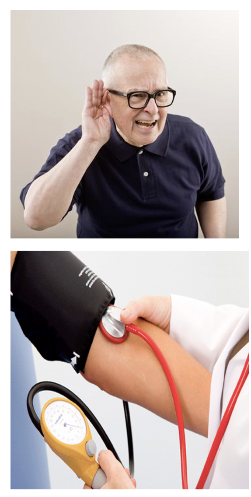
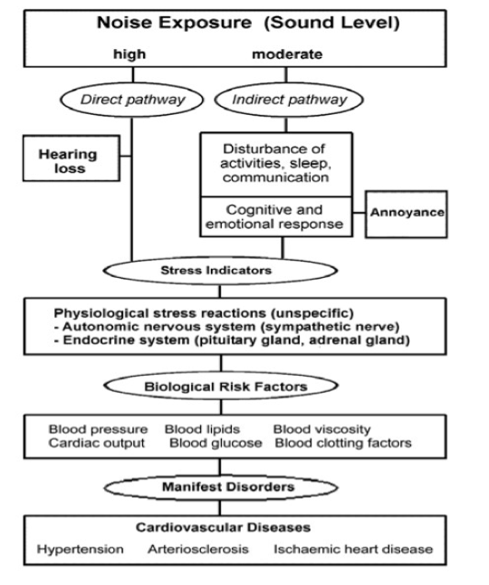
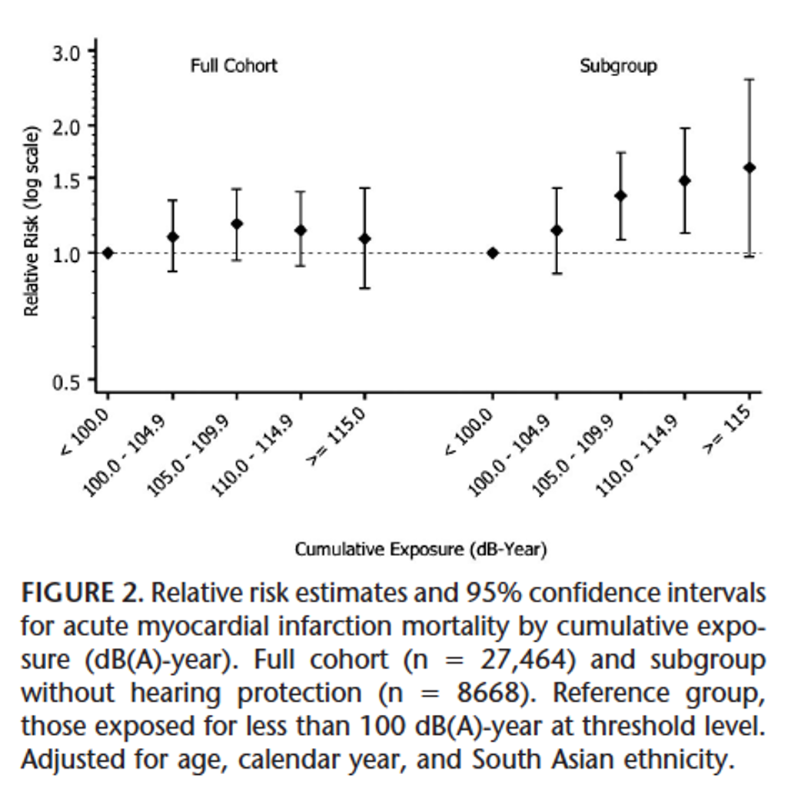
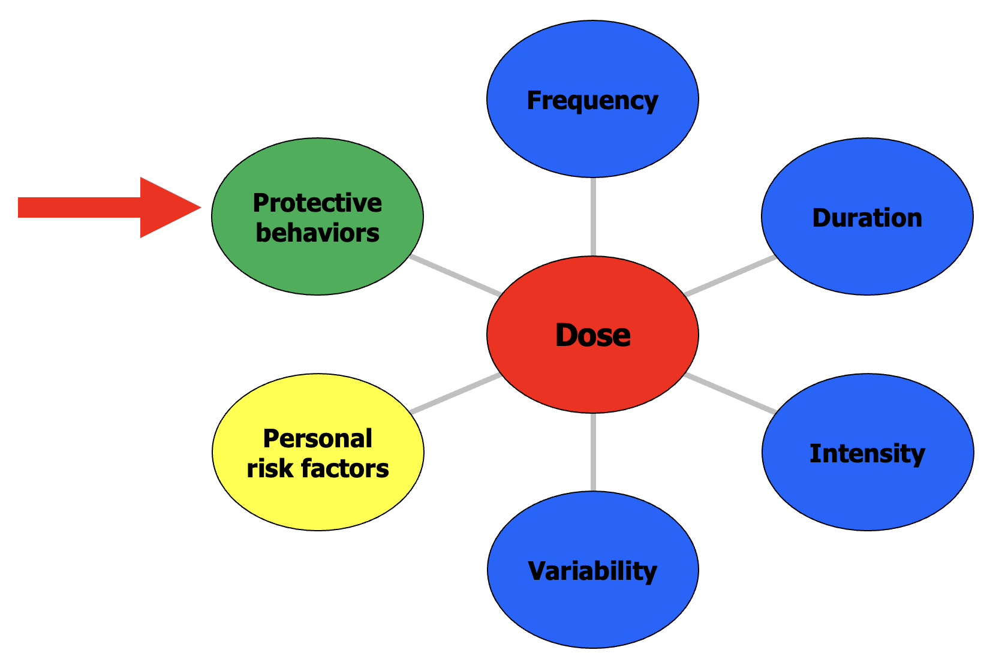
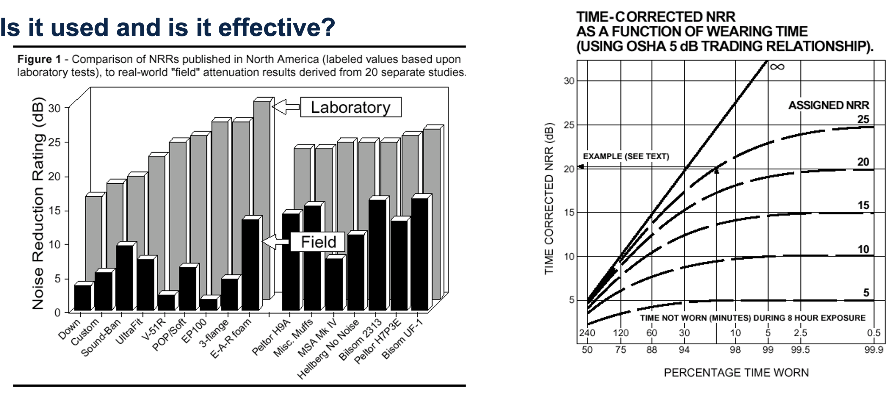

Introduction pt II, overview of dataset (Lecture 2)
Lecture 2: Introduction and overview, continued
Setting the stage
So, what exposure will be focusing on this semester?
Exposure selected based on…
Ubiquity of exposure (e.g., many sources)
Variability of exposure
Range of health effects
Availability of dataset
Over-emphasis on chemicals at SPH
Setting the stage
Will use dataset of noise exposures and two health outcomes related to noise
Hearing loss
Hypertension
Concepts from this analysis can be readily applied to
Any hazard
Workplace and community exposures

Noise and associated health effects
Noise among most common occupational exposures
Noise-induced hearing loss (NIHL) among most common, well-understood occupational diseases
100% preventable, but permanent, irreversible
Profound social and occupational effects
Most understanding based on continuous noise exposure
Time course of NIHL from variable noise unclear
Non-auditory effects of noise less well-understood
Hypertension, ischemic heart disease, etc
Most understanding based on continuous noise exposure
Noise and hearing loss

Noise and hearing loss

Noise and hearing loss

Noise and hearing loss

Noise and hearing loss

Noise and CVD

Environmental noise and CVD

Environmental noise and CVD

Continuous occupational noise and CVD

One way to assess CVD: blood pressure
Measured using 2 numbers (e.g., 120 over 80 or 120/80)
First number = systolic blood pressure
- Measures the pressure in blood vessels when heart beats
Second number = diastolic blood pressure
- Measures pressure in blood vessels when heart rests between beats
- For EHS 655, hypertension is SBP ≥140 or DBP ≥ 90

Okay, so noise is bad. Why do we need another study?
Anyone know Hill’s Criteria for Causality?

NIHL claims in one industry with highly variable noise
7.5% workforce 1984-96, 21% accepted NIHL claims

Overview of study (some of) our data come from
Prospective study of early NIHL among construction workers, 2000-2010
- Why are studies like this rare?
Workers recruited at start of apprenticeship programs
Annual subject visit to University of Washington, Seattle with:
Extensive battery of hearing tests, blood pressure test
Survey of work experience, tasks, perceptions of exposure
Direct exposure measurements on cohort infeasible
Data needed to understand risk of health effects of noise

Exposure assessment in construction

Challenges related to scope of “big” exposure data
Full-shift dosimetry measurements from 70-140 dBA
Convenience sample of construction workers at sites around Puget Sound
Shifts not all exactly 8 hours
Dosimeters datalog exposure parameters at 1-min intervals
Average level (LEQ) in dBA
Maximum level (LMAX) in dBA
Workers simultaneously record tasks, hearing protector use, etc.

Task-based exposure assessment

Subjective rating (SR) of noise exposure
Workers assess own noise exposure via SR
Simultaneously measure noise exposure
Combine for quantitative exposure estimate
Data needed to understand risk of health effects of noise

Variability - alternative metrics
Different exposure parameters may help explain health effects
Average
Maximum or peak
Can also compute ratios of these parameters
- Maximum/average (peakiness of levels)

Data needed to understand risk of health effects of noise

Example sources of noise in daily life

Example sources of noise in daily life

Common noise complaints

Data needed to understand risk of health effects of noise

Factors to consider regarding use of hearing protectors

Other protective “behaviors”
Acoustic reflex
Biomarker of exposure and susceptibility
- Temporary Threshold Shift at 2 mins post-exposure, TTS2

Data needed to understand risk of health effects of noise

From the reading

Introduction to the data files
Types of files
Dataset file
Variable description file
You’ll be using and referring to both regularly
Resources
Statistics Consulting Group, University of California-Los Angeles Institute for Digital Research and Education
Which statistical analysis should I use? https://stats.idre.ucla.edu/other/mult-pkg/whatstat/
Helpful resources for R https://stats.oarc.ucla.edu/r/
Getting help with R from the R Project
Search engines will be your best friend for searching for or troubleshooting R commands